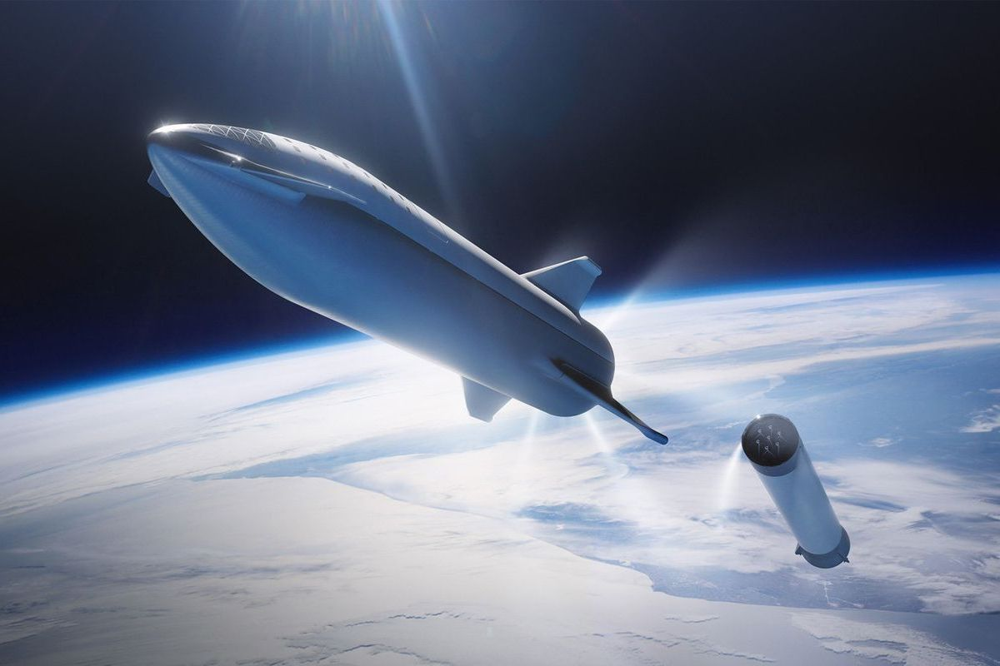
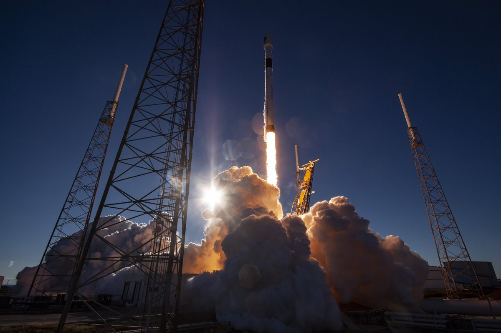

Наша мета - відправити першу вантажну місію на Марс у 2022 році. Ця місія повинна перевірити наявність води, визначити основні джерела небезпеки та доставити вантажі, необхідні для розгортання первинної інфраструктури для генерації енергії, видобутку корисних копалин та підтримки життя.
 